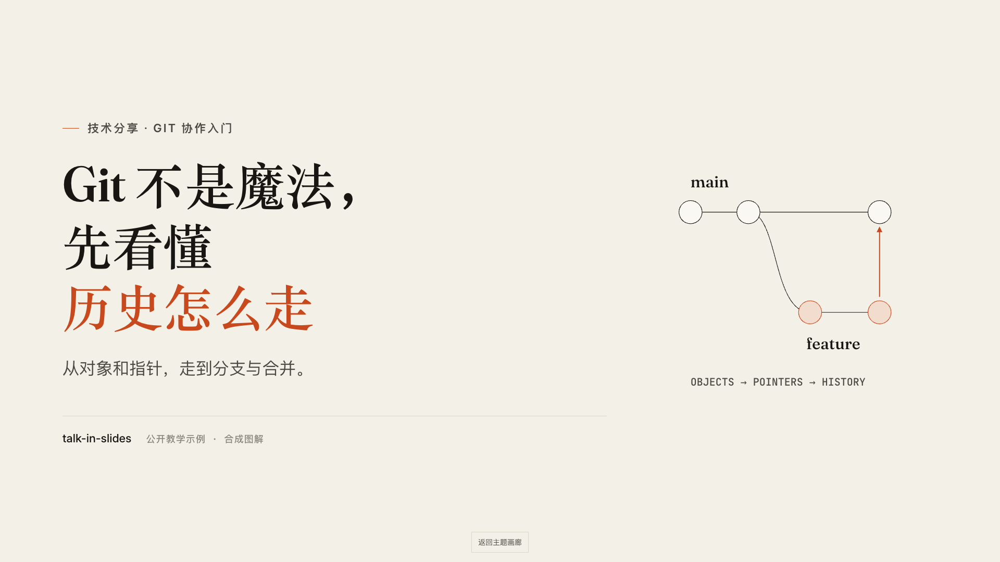
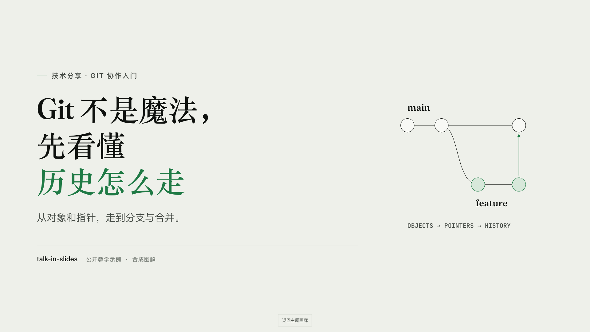
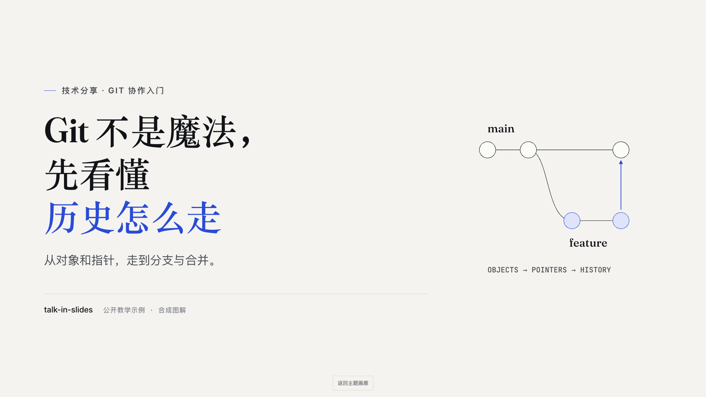
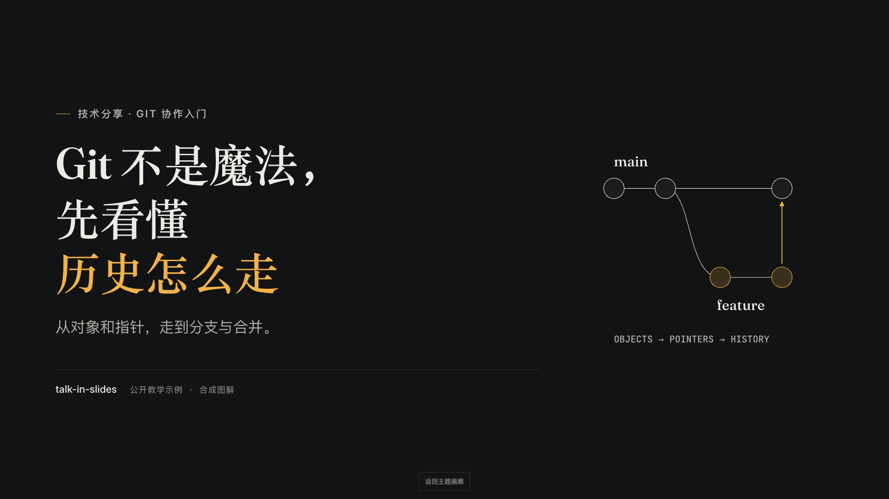
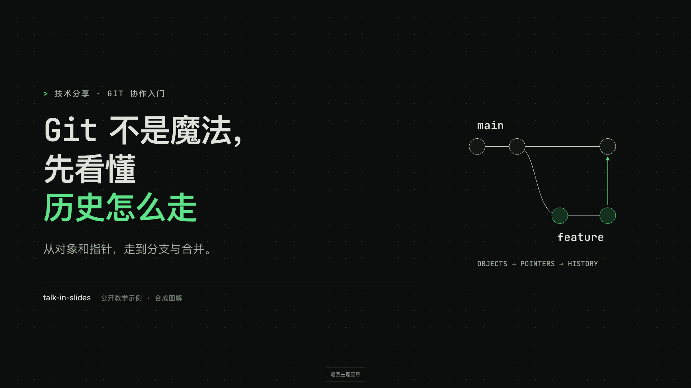
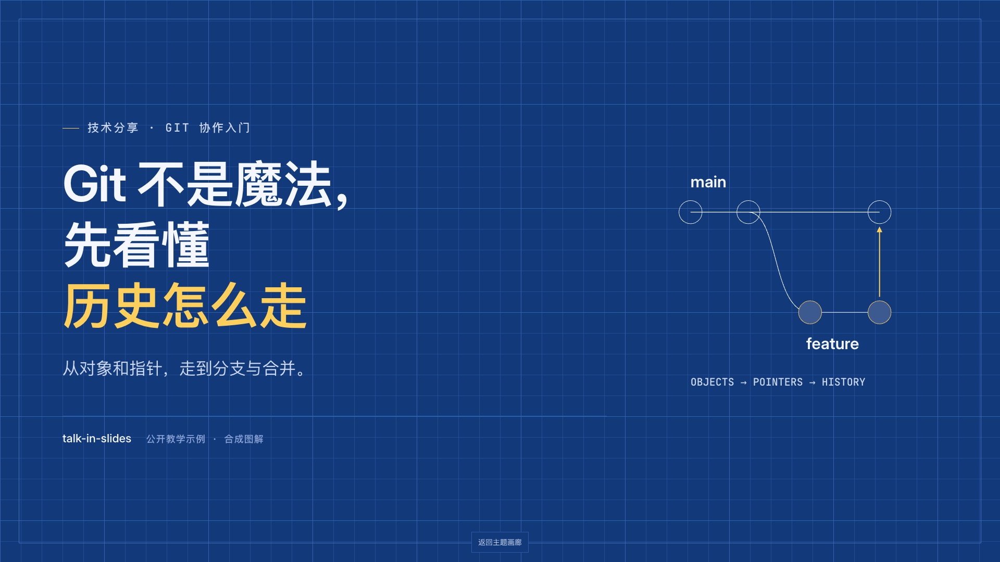
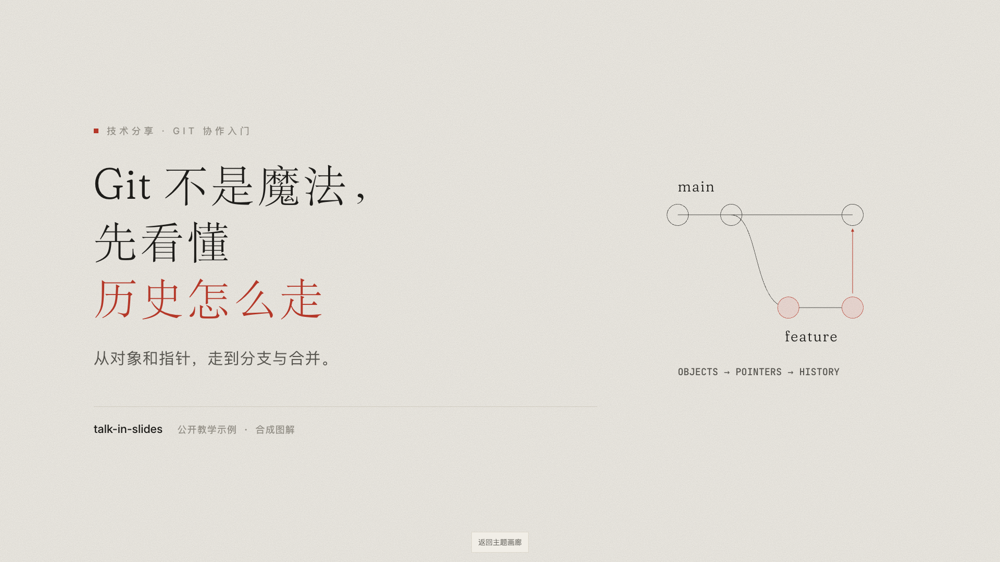

FOR YOUR NEXT TALK
下一次分享，
让观点走到眼前。
一份主题，一张画布。
把技术分享、讲座与课程，做成可以发链接的演示。
07种风格08页同题示例01份内容源
SAME STORY, DIFFERENT VOICES
Git 不是魔法。
相同的内容、图解与点击节奏，只换呈现风格。
点击截图，进入完整演示。

01 / Warm paper
暖纸
暖米纸、朱红与衬线标题
讲座 · 技术分享 · 课程

02 / Quiet sage
灰绿
灰绿纸、墨绿与安静的留白
研究 · 复盘 · 阅读

03 / Clear cobalt
冷白
冷白底色与钴蓝重点
产品 · 方案 · 商务汇报

04 / After dark
夜场
深色舞台与琥珀光点
发布 · 大会 · 暗场投影

05 / Terminal
终端
等宽字、点阵与磷光绿
工程 · 开源 · 故障复盘

06 / Blueprint
蓝图
制图蓝、坐标纸与黄色标注
架构 · 系统 · 路线图

07 / Yohaku
余白
和纸、宋体与朱色一点
中文讲稿 · 方法论 · 设计
MAKE IT YOURS
带上题目，开始写稿。
把仓库作为技能安装，告诉 AI 受众、时长与主题。
从逐页提纲到画面，再到截图检查。
用 talk-in-slides 做一份 10 分钟的 Git 分享，
面向刚入职的工程师，使用终端风格。进入演示以后
- ← / → / 空格
- 后退、前进与分步揭示
- M
- 总览全部页面，选页进入
- S / F / B
- 演讲者备注、全屏、暂停
- 触屏
- 点按或横向滑动；横屏观看更清晰
示例采用合成图解，不包含真实仓库或团队数据。